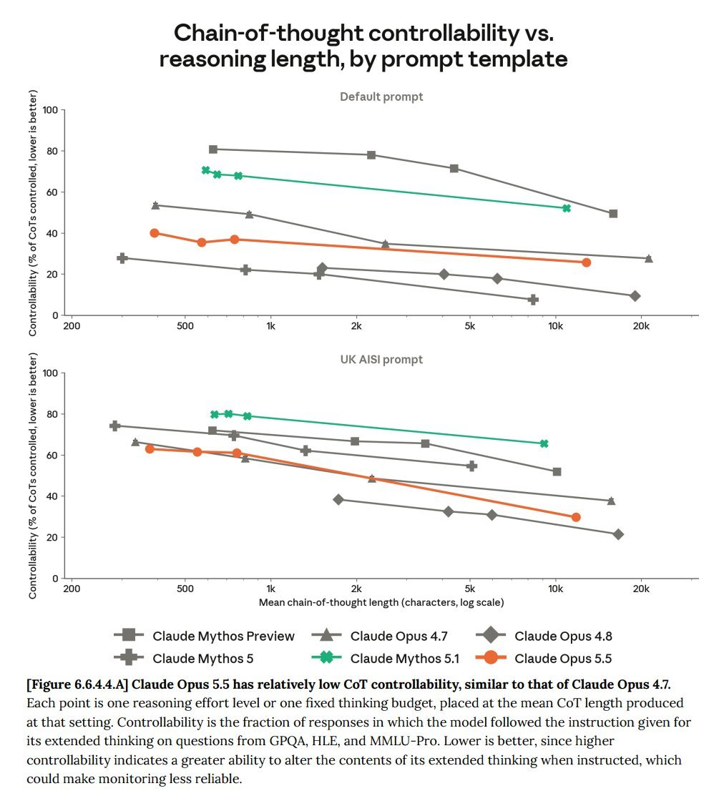

Opus 5.5 only has Opus-levels of ability to control its chain of thought, not Mythos-levels. Which suggests size and architecture drive this, rather than capability levels. https://t.co/WfavTZtsJu


cited on: claude-opus-5-5
Reproduced against link rot, credited and linked to its original. Yours and you’d rather it weren’t here? Open an issue.